용접산업기사 (2010-05-09 기출문제)
1과목: 용접야금 및 용접설비제도
1. 탄소 이외의 원소가 강의 성질에 미치는 영향 중 황(S)의 함유량이 많을 경우 발생하기 쉬운 결함은?(오류 신고가 접수된 문제입니다. 반드시 정답과 해설을 확인하시기 바랍니다.)
- 적열취성
- 청열취성
- 저온취석
- 뜨임취성
(정답률: 93%)

2. 다음 중 탄소공구강의 구비 조건으로 틀린 것은?
- 가격이 저렴할 것
- 강인성 및 내충격성이 우수할 것
- 내마모성이 작을 것
- 상온 및 고온경도가 클 것
(정답률: 67%)
3. 가스용접봉을 선택할 때 고려하여야 할 조건에 대한 설명으로 맞지 않는 것은?
- 가능한 모재와 동일한 재질로서 모재를 강화시킬 수 있어야 한다.
- 용접봉의 용융온도가 모재보다 높아야 한다.
- 용접부의 기계적 성질에 나쁜 영향을 주어서는 안된다.
- 용접봉의 재질 중에 불순물을 포함하지 않아야 한다.
(정답률: 89%)
4. 피복 아크 용접봉의 플럭스에 함유되어 있는 탈산제가 아닌 것은?
- Fe - Mn
- Fe - Si
- Fe - Ti
- Fe - Cu
(정답률: 74%)
5. 다음 중 용강 중의 질소 함유량을 나타내는 시버츠의 법칙으로 맞는 것은? (단, [N]: 용강 중의 질소의 활량, KN : 평형정수, PN2 : 기상 중의 질소의 분압이다.)
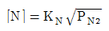
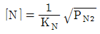
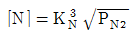
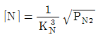
(정답률: 53%)
6. 탄소강에서 탄소(C)의 함유량이 증가할 경우에 해당 하는 것은?
- 경도증가, 연성감소
- 경도감소, 연성감소
- 경도증가, 연성증가
- 경도감소, 연성증가
(정답률: 88%)
7. 브리넬 경도계의 경도 값의 정의는 무엇인가?
- 시험하중을 압입자국의 깊이로 나눈 값
- 시험하중을 압입자국의 높이로 나눈 값
- 시험하중을 압입자국의 표면적으로 나눈 값
- 시험하중을 압입자국의 체적으로 나눈 값
(정답률: 63%)
8. 재열 균열을 방지하기 위한 방법으로 옳은 것은?
- 입열을 최소화 하여 결정립의 조대화를 억제한다.
- Al, Pb등을 첨가하여 HAZ부의 조대화를 촉진시킨다.
- 용접시 용접부 구속을 증가시켜 비틀림을 방지한다.
- 후열처리 시 최고가열 온도를 모재의 Tempering 온도 이상으로 한다.
(정답률: 59%)
9. 용접 전에 적당한 온도로 예열하는 목적으로 틀린 것은?
- 수축 변형을 감소시키기 위하여
- 냉각속도를 빠르게 하기 위하여
- 잔류응력을 경감시키기 위하여
- 연성을 증가시키기 위하여
(정답률: 86%)
10. 다음 중 체심입방격자를 갖는 금속이 아닌 것은?
- W
- Mo
- Al
- V
(정답률: 72%)
11. 특수한 용도의 선으로 얇은 부분의 단면도시를 명시하는데 사용하는 선은?
- 아주굵은실선
- 가는 1점 쇄선
- 파단선
- 가는 2점 쇄선
(정답률: 57%)
12. 출력하는 도면이 많거나 도면의 크기가 크지 않을 경우 도면이나 문자들을 마이크로필름화를 하는 장치는?
- CIM 장치
- CAE 장치
- CAT 장치
- COM 장치
(정답률: 64%)
13. 다음 그림과 같은 용접 보조기호를 올바르게 설명한 것은?
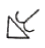
- 오목하게 처리한 필릿 용접
- 용접한 그대로 처리한 필릿 용접
- 볼록하게 처리한 필릿 용접
- 매끄럽게 처리한 필릿 용접
(정답률: 92%)
14. 도면에 마련해야 하는 양식에 관한 설명 중 틀린 것은?
- 비교 눈금은 도면 용지의 가장자리에서 가능한 한 윤곽선에 겹쳐서 중심마크에 대칭으로, 너비는 최대 5mm로 배치한다.
- 윤곽선은 최소 0.5mm 이상의 실선으로 그리는 것이 좋다.
- 도면을 마이크로필름으로 촬영하거나 복사할 때 편의를 위하여 중심마크를 표시한다.
- 부품란에는 도면번호, 도면명칭, 척도, 투상법 등을 기입한다.
(정답률: 52%)
15. 다음 그림과 같은 용접기호를 올바르게 설명한 것은?
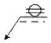
- 화살표 쪽의 심 용접
- 화살표 반대쪽의 필릿 용접
- 화살표 쪽의 스폿 용접
- 화살표 쪽의 플러그 용접
(정답률: 88%)
16. 용접 기본기호 중 점 용접 기호는?
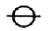
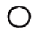
(정답률: 87%)
17. 다음 용접 기호를 설명한 것으로 틀린 것은?
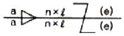
- 목 두께가 a인 지그재그 단속 필릿 용접이다.
- n은 용접부의 개수를 말한다.
- ℓ은 용접부의 길이로 크레이터부를 포함한다.
- (e)는 인접한 용접부 간의 거리를 표시한다.
(정답률: 71%)
18. 가는 1점 쇄선의 용도에 의한 명칭이 아닌 것은?
- 중심선
- 기준선
- 피치선
- 숨은선
(정답률: 71%)
19. 다음 그림에서 용접부 기호의 명칭으로 옳은 것은?
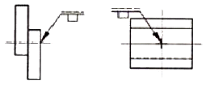
- 필릿용접
- 점용접
- 플러그용접
- 이면용접
(정답률: 87%)
20. 핸들이나 바퀴 등의 암 및 리브, 훅, 축, 구조물의 부재 등의 절단면을 표시하는데 가장 적합한 단면도는?
- 부분 단면도
- 회전도시 단면도
- 조합에 의한 단면도
- 한쪽 단면도
(정답률: 85%)
2과목: 용접구조설계
21. 가 용접시 주의 하여야 할 사항으로 맞는 것은?
- 가 용접은 본 용접에 비해 중요하지 않으므로 대충 용접한다.
- 가 용접에 사용되는 용접봉은 본 용접보다 굵은 용접봉을 사용한다.
- 본 용접자와 동등한 기량을 갖는 용접자로 하여금 가접하게 한다.
- 가 용접의 위치는 부품의 끝, 모서리, 각 등과 같이 응력이 집중되는 곳에서 한다.
(정답률: 88%)
22. 연강 맞대기 용접의 완전용입 이음에서 모재 인장강도에 대한 용접 시험편 인장강도의 이음 효율은 보통 얼마인가?
- 100%
- 80%
- 60%
- 40%
(정답률: 61%)
23. 용접시공시 관리의 기본 회로를 설명한 것으로 가장 적당한 것은?
- 확인 → 계획 → 실시 → 행동
- 계획 → 확인 → 실시 → 행동
- 계획 → 실시 → 행동 → 확인
- 계획 → 실시 → 확인 → 행동
(정답률: 51%)
24. 특수강 용접시 용접봉의 선택에서 가장 먼저 고려해야 할 것은?
- 작업성(사용하기 쉬운가의 여부)
- 용접성(용접한 부분의 기계적 성질)
- 환경성(작업의 조건 및 안전한가 여부)
- 경제성(제반 경비 단가)
(정답률: 75%)
25. 다음 그림의 용접이음 중 적은 하중이나 충격 또는 반복하중을 받지 않는 곳에서 사용하는 이음현상은?
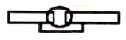
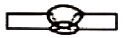
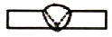
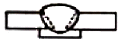
(정답률: 68%)
26. 용접지그를 선택하는 기준 설명 중 틀린 것은?
- 청소하기 쉬워야 한다.
- 용접변형을 억제할 수 있는 구조이어야 한다.
- 피용접물과의 고정과 분해가 어려운 구조이어야 한다.
- 작업 능률이 향상되어야 한다.
(정답률: 88%)
27. 연강을 인장시험으로 측정할 수 없는 것은?
- 항복점
- 연신율
- 재료의 경도
- 단면수축률
(정답률: 54%)
28. 용접이음의 안전율에 영향을 미치는 주요 인자로 고려할 사항으로 가장 적절하게 나열한 것은?
- 모재의 기계적 성질, 모재의 보관방법, 용접기의 종류, 용착금속의 기계적 성질, 파괴시험
- 재료의 가격성, 용접사의 기능, 용접자세, 하중의 형상 모재의 보관방법
- 용착금속의 기계적 성질, 작업장소, 용접자세, 용접기의 종류, 하중의 형상
- 모재의 기계적 성질, 재료의 용접성, 용접방법, 하중의 종류, 용접자세
(정답률: 70%)
29. 용접부 결함의 종류중 구조상의 결함이 아닌 것은?
- 기공
- 슬래그 섞임
- 융합불량
- 변형
(정답률: 85%)
30. 무부하 전압이 80W, 아크전압 35V, 아크전류 400A이라 하면 교류 용접기의 역률과 효율은 각각 약 몇 %인가? (단, 내부손실 4kW이다.)
- 역률 : 51 효율 : 72
- 역률 : 56 효율 : 78
- 역률 : 61 효율 : 82
- 역률 : 66 효율 : 88
(정답률: 67%)
31. 용접이음을 설계할 때 일반적인 주의 사항으로 틀린 것은?
- 강도가 약한 필릿 용접은 될 수 있는 대로 피하고 맞대기 용접을 하도록 한다.
- 용접작업에 지장을 주지 않도록 충분한 공간을 준다.
- 용접이음이 한 곳으로 집중되거나, 접근되도록 한다.
- 가급적 능률이 좋은 아래보기 용접을 많이 하도록 한다.
(정답률: 87%)
32. 맞대기 용접 이음의 홈의 종류가 아닌 것은?
- I형 홈
- V형 홈
- T형 홈
- U형 홈
(정답률: 88%)
33. 피복 아크 용접에서 용접부의 균열 방지대책으로 맞지 않는 것은?
- 적당한 예열과 후열을 한다.
- 염기도가 적은 용접봉을 선택한다.
- 적절한 속도로 운봉을 한다.
- 저수소계 용접봉을 사용한다.
(정답률: 77%)
34. 초음파 탐상법의 종류에 속하지 않는 것은?
- 투과법
- 펄스반사법
- 공진법
- 관통법
(정답률: 55%)
35. 용접 홈의 형상 중 V형 홈에 대한 설명으로 옳은 것은?
- 판 두께가 대략 6mm 이하의 경우 양면 용접에 사용한다.
- 양쪽 용접에 의해 완전한 용입을 얻으려고 할 때 쓰인다.
- 판 두께 3mm 이하로 루트 간격 없이 한쪽에서 용접할 때 쓰인다.
- 보통 판 두께 20mm 이하의 판에서 한쪽 용접으로 완전한 용입을 얻고자 할 때 쓰인다.
(정답률: 64%)
36. AW-400인 용접기 50대를 설치하고자 할 때 전원 변압기는 어느 정도 용량을 설비해야 하는가? (단, 용접기의 평균전류는 200A, 무부하 전압은 80V, 사용율은 70%이다.)
- 320 kVA
- 420 kVA
- 460 kVA
- 560 kVA
(정답률: 37%)
37. 플러그 용접의 설명으로 알맞은 것은?
- 고진공 중에서 고속전자 방출에 의한 충격 발열을 이용하여 접합하는 용접방법
- 접합하는 부대 한쪽에 원형 구멍을 뚫고 판의 표면까지 가득하게 용접하고 다른 쪽 부재와 접합하는 용접 방법
- 겹친 모재를 전극의 선단에 끼워놓고 전류를 집중시켜 국부적으로 가열과 동시 가압하는 용접방법
- 맞대기 저항용접의 일종이며 접합부를 충분히 가열한 다음 큰 압력으로 면을 접합하는 용접방법
(정답률: 82%)
38. 각 변형의 방지대책에 관한 설명 중 틀린 것은?
- 개선 각도는 작업에 지장이 없는 한도 내에서 작게 하는 것이 좋다.
- 용접속도가 빠른 용접법을 이용한다.
- 구속지그를 활용한다.
- 판 두께와 개선형상이 일정할 때 용접봉 지름이 작은 것을 이용하여 패스의 수를 늘인다.
(정답률: 76%)
39. 용착부의 인장응력이 5kgf/mm2, 용접선 유효길이가 80mm이며, V형 맞대기로 완전 용입인 경우 하중 8000kgf에 대한 판 두께는 몇 mm인가? (단, 하중은 용접선과 직각 방향임)
- 10
- 20
- 30
- 40
(정답률: 75%)
40. 용접부 내부에 모재표면과 평행하게 충상으로 형성되어 있는 균열은?
- 라멜라테어 균열
- 라미네이션 균열
- 재열 균열
- 힐 균열
(정답률: 51%)
3과목: 용접일반 및 안전관리
41. 산소와 아세틸렌 가스용기 취급시 주의할 점으로 틀린 것은?
- 산소용기는 직사광선을 피하고 60℃ 이하에서 보관 한다.
- 아세틸렌 용기는 반드시 세워서 사용해야 한다.
- 산소병을 운반시는 반드시 캡을 씌워 이동한다.
- 가스누설 점검은 수시로 실시하며 비눗물로 한다.
(정답률: 83%)
42. 용해 아세틸렌을 용기에 15℃, 15기압으로 충전할 때 아세틸렌은 1ℓ의 아세톤에 몇 ℓ가 용해되는가?
- 375
- 200
- 250
- 275
(정답률: 60%)
43. 아크 발생열에 의하여 피복제가 분해되어 일산화탄소, 이산화탄소, 수증기 등의 가스 발생제가 되는 가스실드식 피복제의 성분은?
- 규산나트륨
- 셀룰로오스
- 규사
- 일미나이트
(정답률: 72%)
44. 용접기의 보수 및 점검시 지켜야 할 사항으로 틀린 것은?
- 2차측 단자의 한쪽과 용접기 케이스는 접지해서는 안된다.
- 가동부분, 냉각팬을 점검하고 회전부 등에는 주유를 해야 한다.
- 탭 전환의 전기적 접속부는 자주 샌드페이퍼 등으로 잘 닦아준다.
- 용접 케이블 등의 파손된 부분은 절연 테이프로 감아야 한다.
(정답률: 69%)
45. 가스절단에서 절단용 산소의 순도가 낮은 것을 사용할였을 때의 설명으로 맞는 것은?
- 슬래그 박리성이 양호하다.
- 절단속도가 느리고, 절단면이 거칠어진다.
- 절단시간이 단축된다.
- 절단 홈의 폭이 좁아지고, 절단효율과는 무관하다.
(정답률: 82%)
46. 장호 용접기에서 용접전류는 직류 또는 교류가 사용되고 아크의 복사열에 의해 모재를 가열 용융시켜 용접을 행하며 용입이 얕은 관계로 스테인리스강 등의 덧붙이 용접에 잘 쓰이는 다 전극 방식은?
- 횡 병렬식
- 횡 직렬식
- 텐덤식
- 다전원 연결 텐덤식
(정답률: 44%)
47. 점 용접의 3대 요소가 아닌 것은?
- 가압력
- 전류의 세기
- 통전시간
- 도전율
(정답률: 84%)
48. 아크길이에 따라 전압이 변동하여도 아크전류는 거의 변하지 않는 특성은?
- 아크 부특성
- 수하 특성
- 정전류 특성
- 정전압 특성
(정답률: 56%)
49. 용접 작업을 하지 않을 때에는 용접기의 2차 무부하 전압을 약 25V 이하로 유지하고 용접봉을 모재에 접촉하는 순간에만 릴레이가 작동하여 용접이 가능토록한 장치는?
- 원격 제어 장치
- 전격 방지 장치
- 핫 스타트 장치
- 고주파 발생 장치
(정답률: 60%)
50. 연강용 피복아크 용접봉에서 피복제의 편심율은 몇%이내이어야 하는가?
- 10%
- 15%
- 30%
- 3%
(정답률: 80%)
51. 용접의 장점에 관한 일반적인 설명으로 틀린 것은?
- 이종 재료도 접합시킬 수 있다.
- 수밀성과 기밀성이 좋다.
- 재료의 두께에 제한을 받는다.
- 보수와 수리가 용이하다.
(정답률: 75%)
52. 안전·보건표지의 색채, 색도기준 및 용도에서 정한 파란색의 용도로 맞는 것은?
- 금지
- 경고
- 안내
- 지시
(정답률: 59%)
53. 납땜 작업시 용제가 갖추어야 할 조건이 아닌 것은?
- 땜납의 표면장력을 맞추어서 모재와의 친화력이 낮을 것
- 납땜 후 슬래그 제거가 용이할 것
- 청정한 금속면의 산화를 방지할 것
- 모재나 땜납에 대한 부식작용이 최소한 일 것
(정답률: 89%)
54. 탄소 아크 절단에 압축공기를 병용하여 적극 홀더의 구멍에서 탄소 전극봉에 나란히 분출하는 고속의 공기를 분출시켜 용융금속을 불어내어 홈을 파는 방법은?
- 가스 가우징
- 스카핑
- 산소창 절단
- 아크에어 가우징
(정답률: 81%)
55. 산소-아세틸렌가스의 혼합비가 1:1정도이고, 표준 불꽃이라고도 하는 것은?
- 산화불꽃
- 탄화불꽃
- 중성불꽃
- 산소과잉 불꽃
(정답률: 68%)
56. 아르곤 가스는 1기압 하에서 약 6500ℓ의 양이 약몇 기압으로 용기에 충전되어 공급하는가?
- 15
- 25
- 140
- 180
(정답률: 42%)
57. 저항용접에 의한 압접에서 전류 20A, 전기저항 40Ω, 통전시간 10sec일 때 발열량은 몇 cal 인가?(오류 신고가 접수된 문제입니다. 반드시 정답과 해설을 확인하시기 바랍니다.)
- 14400
- 28800
- 48800
- 24400
(정답률: 59%)
58. 일렉트로 슬래그 용접에서 사용되는 수냉식 판의 재료는?
- 알루미늄
- 니켈
- 구리
- 연강
(정답률: 53%)
59. 용해 아세틸렌의 이점에 해당되지 않는 것은?
- 아세틸렌 발생기와 부속기구가 필요하다.
- 운반이 비교적 용이하다.
- 발생기를 사용하지 않으므로 폭발의 위험성이 적다.
- 순도가 높아 불순물에 의해 용접부의 강도가 저하되지 않는다.
(정답률: 44%)
60. 가스용접이나 절단에 사용되는 연료가스가 가져야할 성질 중 틀린 것은?
- 불꽃의 온도가 높을 것
- 연소 속도가 느릴 것
- 발열량이 클 것
- 용융금속과 화학반응을 일으키지 않을 것
(정답률: 80%)
"적열취성"은 강이 뜨거워지면 더욱 단단해지는 성질을 의미합니다. 따라서, 강이 뜨거워지면서 FeS 결함이 발생할 경우, 이 결함은 더욱 강화되어 파손될 가능성이 높아집니다. 이러한 이유로, 황 함유량이 많을 경우 강의 적열취성이 감소하게 됩니다.